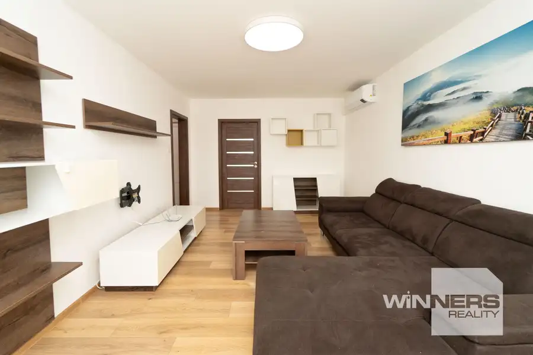
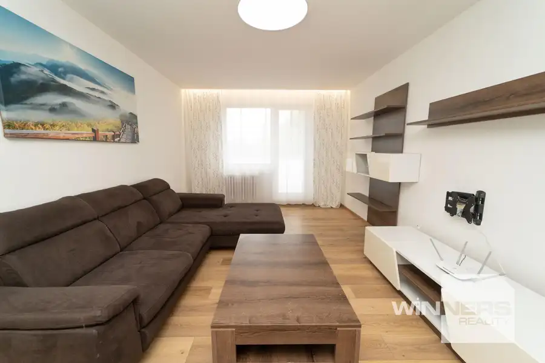
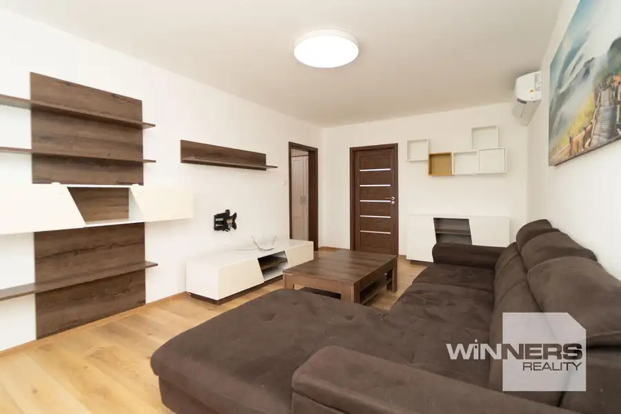
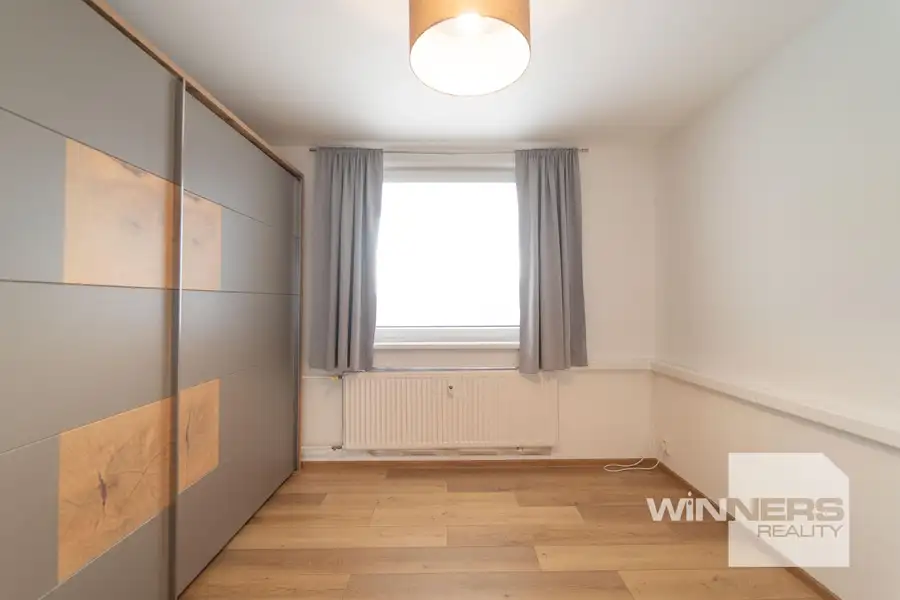
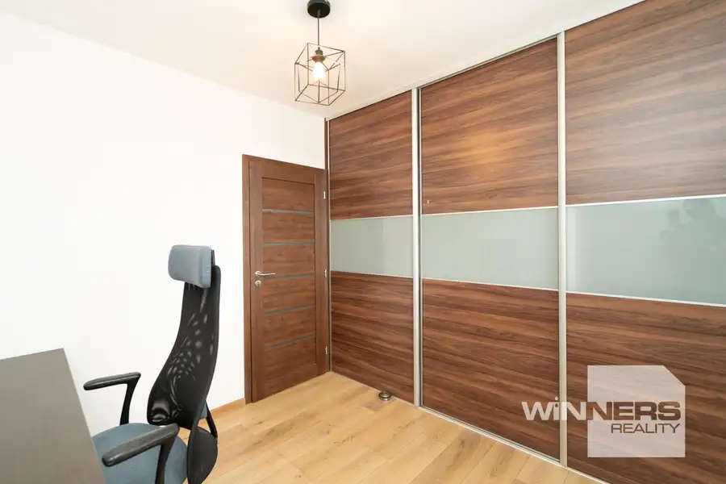
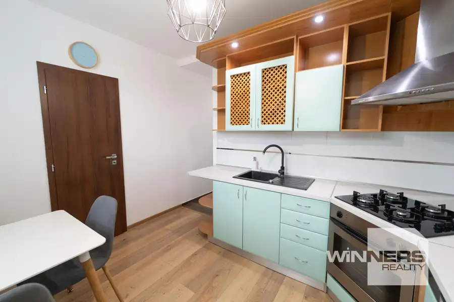
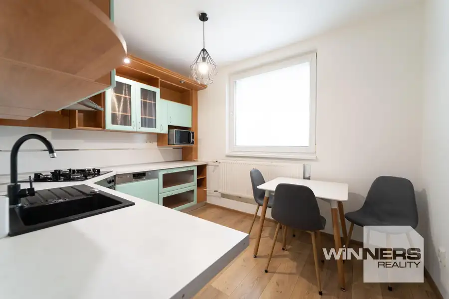

Na predaj útulný , slnečný byt v Trebišove
Trebišov







- Dispozícia3-izbový
- Plocha70.65 m²
- Poschodie3. z 8
- StavKompletná rekonštrukcia
- VlastníctvoOsobné
O nehnuteľnosti
Exkluzívna ponuka! Ponúkame na predaj 3 izbový byt na ulici SNP v TrebišoveZÁKLADNÉ ÚDAJE: Dispozícia: 3 izbový byt, 3/8 podlažie Úžitková plocha: byt 70.65 m2 vrátane pivnice a balkónaPOPIS BYTU: vstupná chodba, 2 x izba, kuchyňa, kúpeľňa, WC, balkón, pivnica. Na byte bola vykonaná rekonštrukcia: * na chodbe a v kúpeľni dlažba, v izbách plávajúca podlaha* zasklená loggia + kamenná dlažba * v byte sú plastové okná a klimatizácia* kuchynská linka je doplnená vstavanými spotrebičmi * samostatné WC * priestranná obývačkaje doplnená vkusnou a modernou sedačkou a nábytkom* z obývačky je výstup na nový priestranný a presklenný balkón* byt má 2 nepriechodné izby: spálňa a detská izba* v detskej izbe a spálni sú vstavané skrine* v byte je veľmi pekná a vkusná kúpeľňa so sprchovacím kútom, umývadlom* byt má novú elektroinštaláciu, rozvody vody a kúrenia* predáva sa zariadený* súčasťou bytu je aj pivnica ENERGIE a POPLATKY: Správcom je Bytový podnik Náklady: 280 eurCENA a PLATBA: - cena 135 000 Eur - byt je voľný- platba v hotovosti alebo prostredníctvom hypotekárneho úveru (pomôžeme Vám s jeho vybavením) LOKALITA a OKOLIE: V blízkosti je všetko na čo si len človek môže spomenúť: zástavka MHD, MŠ, ZŠ, pošta, poliklinika, sieť obchodov a služieb, oddychová zóna Parkovanie pred vchodomBezproblémoví susedia Bližšie infornácie a termíny obhliadok :Tatiana Ferjová+421 918 781 908Tatiana.ferjova@winnersgroup.sk Táto inzercia nie je verejnou ponukou na uzavretie zmluvy. Vlastník si vyhradzuje právo voľby o tom, komu a za akých dojednaných podmienok prevedie svoje vlastnícke právo. Pri tejto ponuke je možné licitovať kúpnu cenu podľa všeobecných podmienok licitácie v sieti Winners reality uverejnených na: www.winnersreality.sk/licitacia.
Parametre
- Cena vrátane energií
- Nie
- Druh
- 3 izbový byt
- Dátum zverejnenia
- 08. 06. 2026
- Podlažie
- 3
- Počet izieb / miestností
- 3
- Počet nadzemných podlaží
- 8
- Stav nehnuteľnosti
- Kompletná rekonštrukcia
- Typ
- Predaj
- Vlastníctvo
- Osobné
- Vybavenie
- Balkón, Pivnica
- Zariadenie
- Zariadené kompletne
- Úžitková plocha
- 70.65 m²